Showa Retro Collection Vol.1
I've collected quirky, retro mascot characters from the Showa era. Here is a look at part of my collection.
The early Colgen Kowa frog, before Kero-chan & Koro-chan
Figure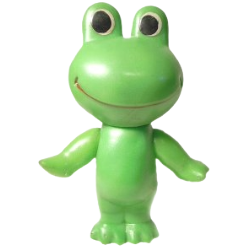
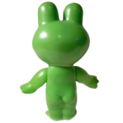
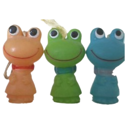
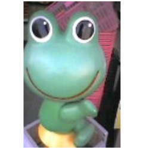
I acquired these through auctions and bought some at a toy shop in Nara. They were quite dirty, so I cleaned them up, and now they look great.
Besides this frog, there are also sitting versions and others. When you think of Colgen, this is the frog that comes to mind. Simple and cute!
Although you don't see them anymore these days, there are also the frogs that used to stand on street corners.
Acquired:1999
Kero-chan & Koro-chan
Figure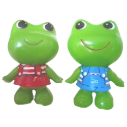
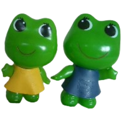
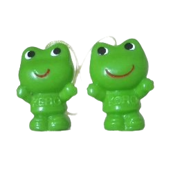
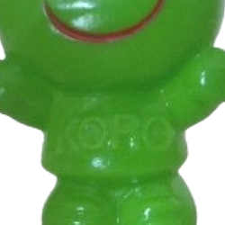
You often see them next to the cash register at pharmacies. Koro-chan came as a freebie when I bought some medicine, and Kero-chan was a gift.
There is also a standing version holding a flag. I acquired each of them from places like a toy shop in Nagoya and through auctions.
Acquired:2002
Zeria-chan/ゼリアちゃん
Finger Puppets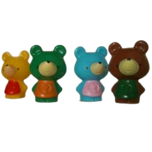
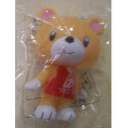
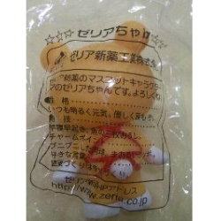
Zeria Pharmaceutical Old Zeria-chan Finger Puppet (Acquired around 2003) Hard soft-vinyl (sofubi).
The font is retro and cute. I really like it. In 2005, she was redesigned into the new Zeria-chan.
Soft vinyl (sofubi). It feels very intricately detailed. Age and gender unknown.
She came from Planet Zeria, located at the center of the constellation Ursa Minor.
Her hobbies include collecting aprons and cooking.
She currently works part-time at a pharmacy to get certified as a healthcare advisor.
-From the official webpage, "Zeria-chan's Room"- So Zeria-chan was a space bear... I'd love to see her riding in a spaceship or something!
Acquired:2003、2005
Mio D Kowa's Mio/ミオＤコーワミオ
Figure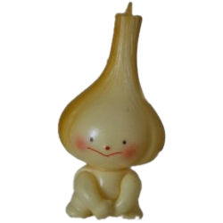
Mio-chan from Mio D Kowa. Her garlic head is so mysterious! ...Really mysterious... Since the product contains a lot of garlic extract, that must be why she ended up looking like this!
Acquired:？